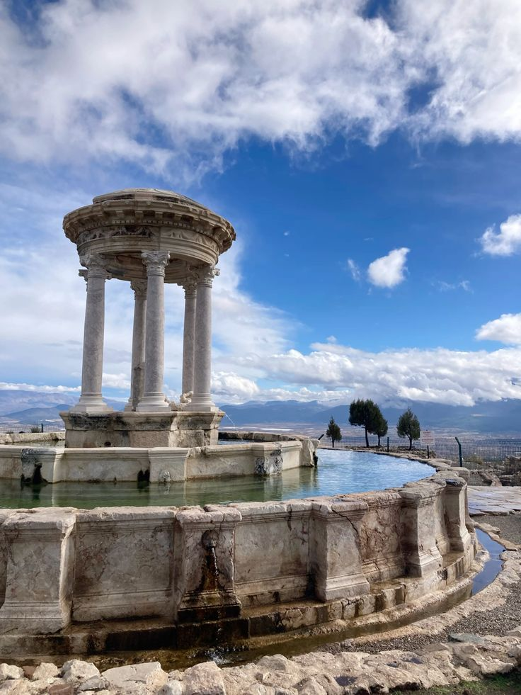
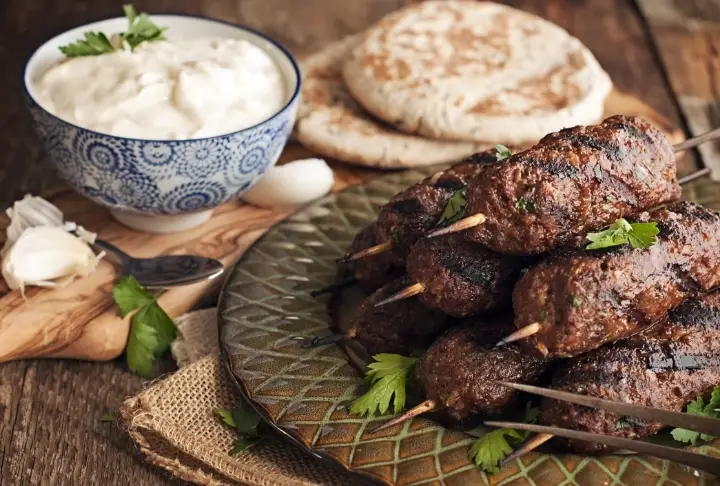
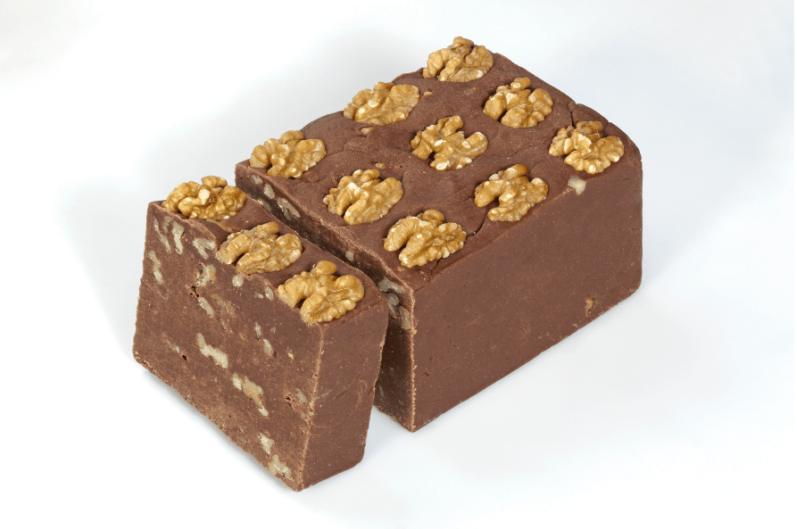

Burdur Mutfak Kültürü
Yöresel Lezzetlerin Sakin Başkenti

Burdur, Akdeniz’in kuzeybatısında yer alan ve zengin kültürel mirasıyla öne çıkan bir şehirdir. Yöresel mutfağı ise sadelik ve lezzetin buluştuğu özel tatlarla doludur.
Burdur şiş, ceviz helvası ve testi kebabı gibi yemekler bölgeye gelenlerin mutlaka denemesi gereken tatlardandır.
- Yöresel et yemekleri
- Geleneksel tatlılar
- Doğal ve taze ürünler
- Anadolu mutfağından izler
Öne Çıkan Yemekler ve Mekan Önerileri

Burdur Şiş
Yalnızca et ve tuz kullanılarak hazırlanan bu kebap türü, odun ateşinde pişirilerek eşsiz bir aroma kazanır.
Nerede Yenir?
- 📍 Öz Burdur Şişçi
- 📍 Şişçi Hasan
- 📍 Cumhuriyet Şişçisi

Ceviz Helvası
Burdur'a özgü bu tatlı, ceviz ve irmiğin muhteşem uyumuyla hazırlanır ve yörede özel günlerde sıkça yapılır.
Nerede Yenir?
- 📍 Helvacı Mehmet Usta
- 📍 Burdur Tatlıcısı
- 📍 Yöresel Lezzetler Durağı

Testi Kebabı
Etin sebzelerle birlikte testide uzun süre pişirilmesiyle yapılan bu kebap, hem görsel hem lezzet açısından doyurucudur.
Nerede Yenir?
- 📍 Testici Mehmet
- 📍 Burdur Sofrası
- 📍 Gölbaşı Restoran